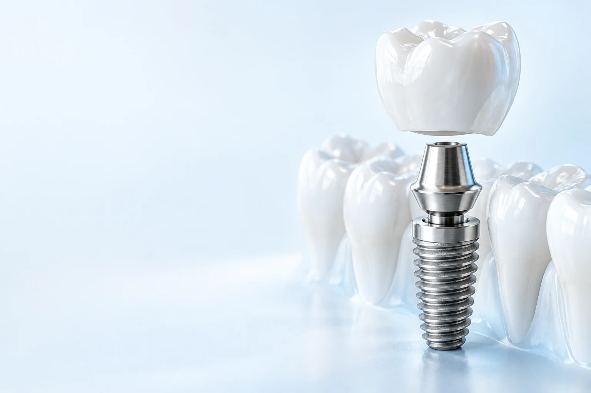
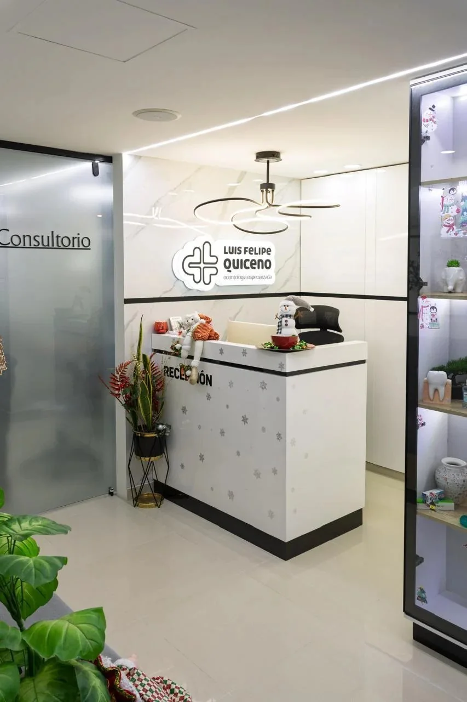
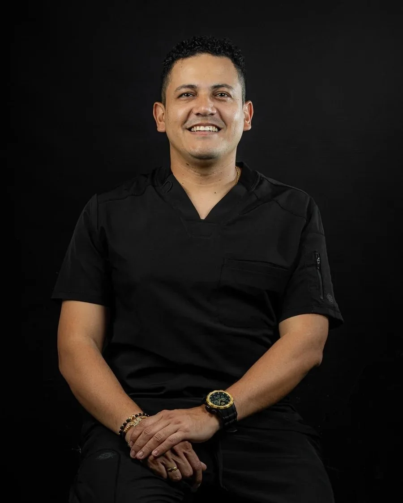

01
Assessment
Begin with your gums, supporting structures and current oral health.
Can I choose the dates first?
Ask the specialist to explain the sequence before booking travel.

Periodontics, dental implants and rehabilitation. Care that starts beneath the surface.
Start with an assessment of gums and the structures supporting your teeth.
Understand suitability, planning and the stages that your individual case may require.
Connect function, comfort and aesthetics through a personalised treatment plan.


The assessment connects your oral health, the available restoration options and the follow-up your case may need.
An implant or rehabilitation plan may involve several clinical stages. Discuss the sequence with the specialist before organising your trip.
Begin with your gums, supporting structures and current oral health.
Ask the specialist to explain the sequence before booking travel.
Discuss whether implants or rehabilitation are appropriate, and the stages the clinician considers necessary.
Your assessment determines the appropriate options and stages.
Understand the visits and follow-up before deciding when to travel from the USA or Canada.
Agree on the follow-up and your point of contact with the practice.